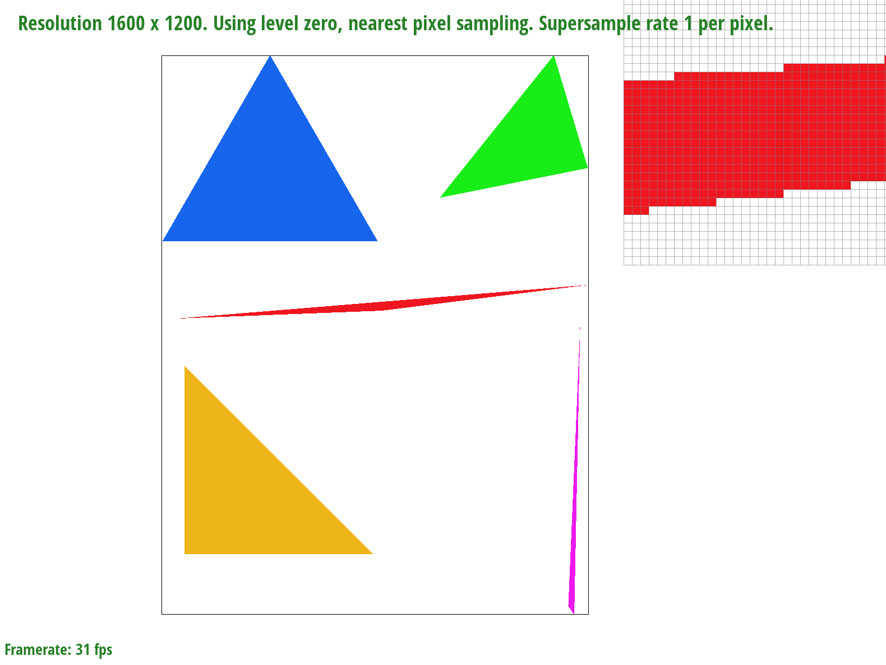
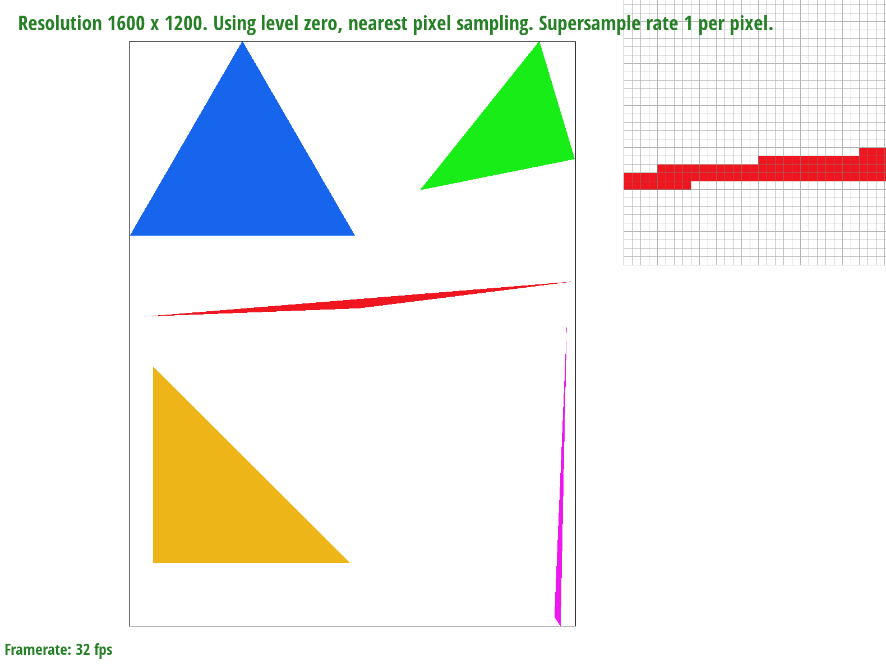
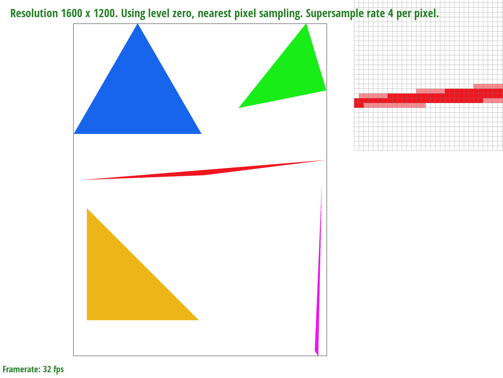
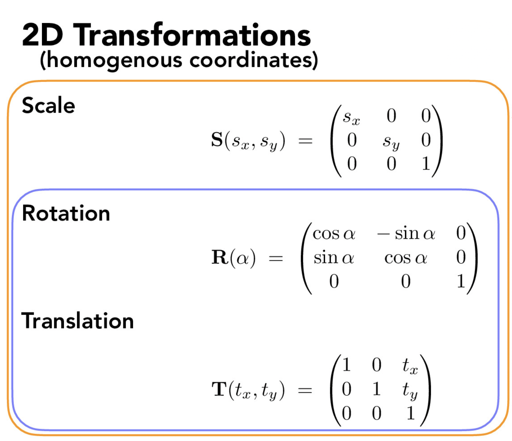
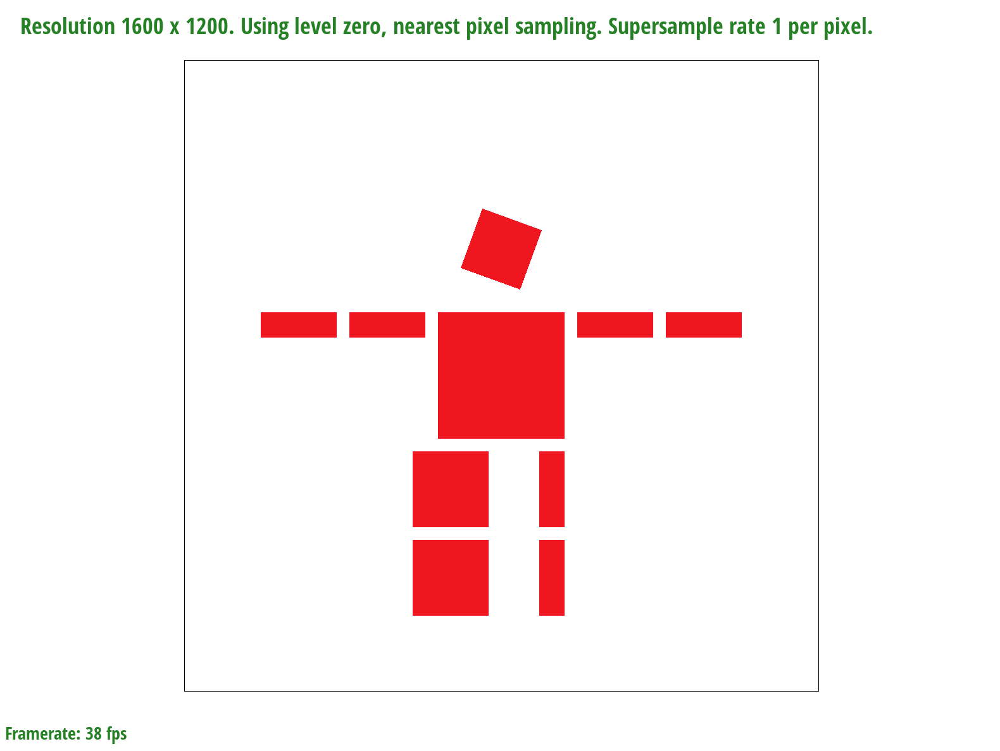
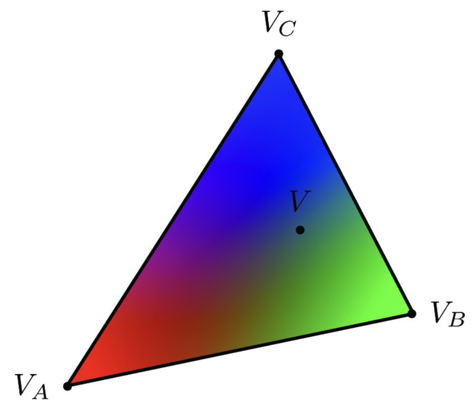
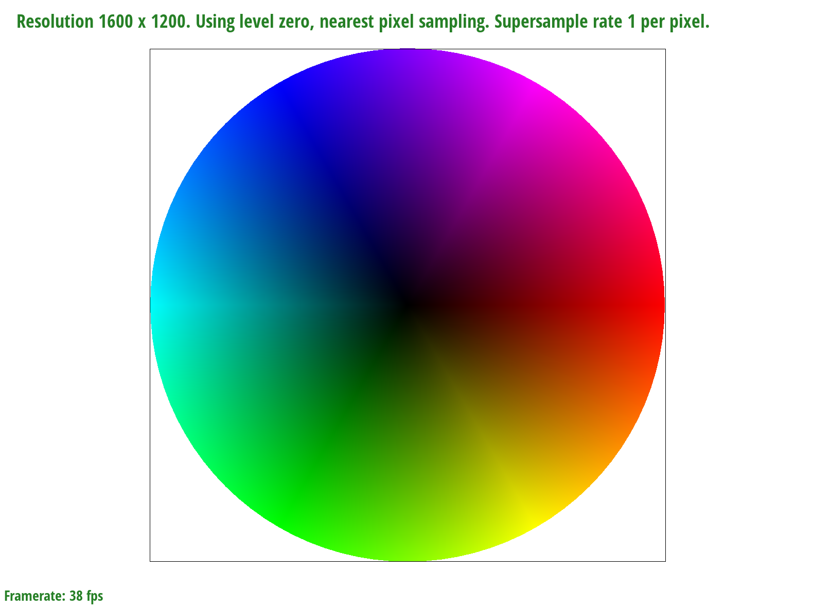
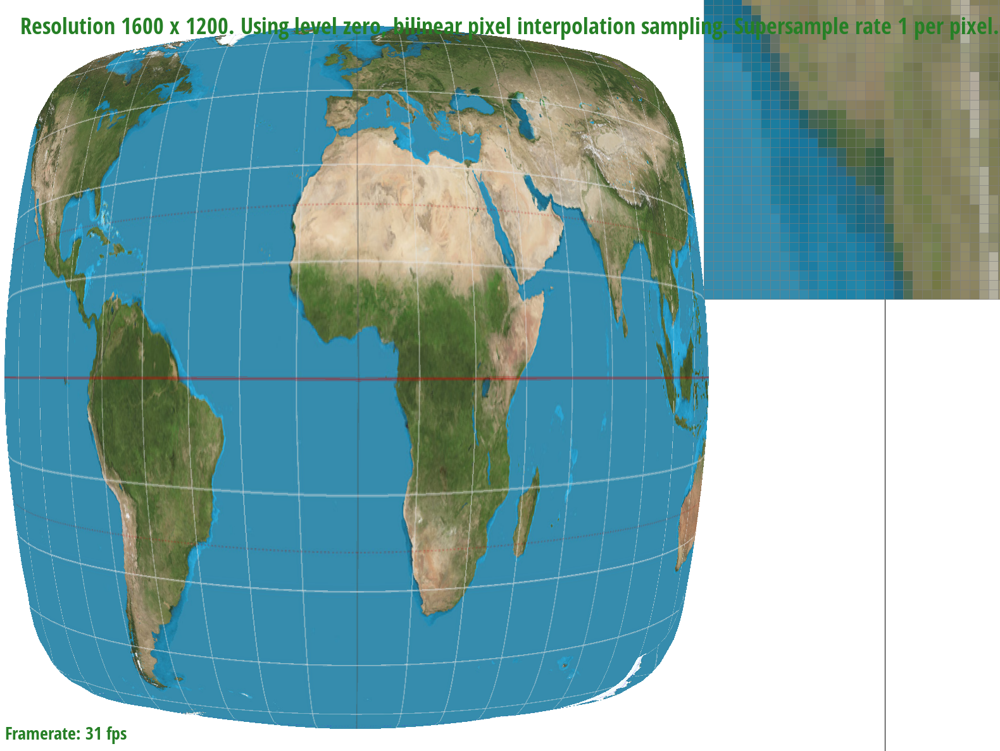
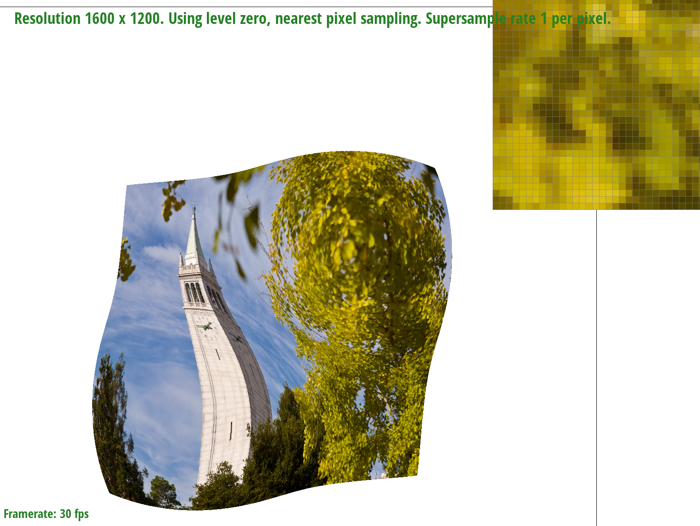
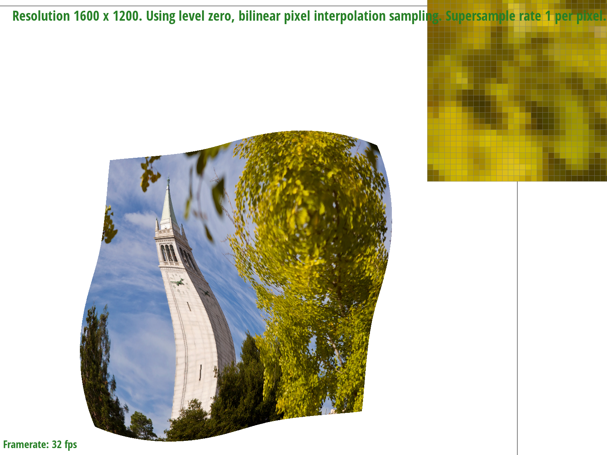

Overview
The project helped us understand the fundamental concepts of computer graphics and imaging really well. We learned how to rasterize shapes by defining functions that tell us which point lies in the shape and which doesn't. We learned to supersample using antialiasing as we used our framebuffer, color and sub-pixel samples to get smoother images. We learned to rotate, scale and translate images. We learned to use barycentric coordinates that helped us give texture gradients across image surfaces. We used pixel sampling and level samples that helped with gradients of colors across pixels and mipmap levels better. Overall, we really learned a lot how computer graphics specialists and gamers draw, color and texture shapes.
Task 1
- The purpose of rasterization is to write a function that draws a triangle by deciding which point lies in the triangle and which doesn't. So we used the three line test as described in lecture for a function point_in_triangle and we called this function in my rasterize_triangle function that draws our triangle.
- At the very beginning of rasterize_triangle, I defined local variables left, right, top and bottom to decide the minimum and maximum possible values of x and y in our triangle. The rectangle with these points as vertices would be the same as the bounding box of this triangle. Since we are only looping over samples with x and y in the range of (left,right) and (bottom, top) respectively, our algorithm is no slower than one that checks every sample in the bounding box of the triangle. 
Task 2
- We defined the sample rate and the frame buffer using set_sample_rate and set_framebuffer_target using the desired sample rate and frame size. We used rasterize_triangle to then sample points from our triangle using antialiasing with the desired sampling rate, where the triangle is drawn using the three vertices and three-line test like task 1, but with differing sample rate. We then used resolve_to_framebuffer that helped us to supersample buffer to rasterize the elements of image data. The sample rate was used to divide our pixels into further sub-pixels that we use for sampling and that help avoid jaggies.  
- As the sampling rate increases from 1 to 4 to 16, we can see in the pixel inspector that the image gets smoother as the spaces between the sub-pixels get blurred out forming sort of a gradient. This is because with more sub-pixels sampled the image data gets more precise.
Task 3
- In this task, we seek to show how to modify the shape and orientation of objects in space, using appropriate transforms in homogeneous coordinates. From lecture, we know of the following matrices that allow translations, rotations, and scaling. 
- For the robot, we alter the rotation of the head in the .svg image, and perform a intensive expansion operation on the robot's right leg (scaling), causing an unstoppable and volatile horizontal expansion which may need to be dealt with by the doctor immediately. These transforms involve the use of the rotation and scaling matrices in order to create the inteded effect. 
Task 4
- In this task, we seek to be able to generate triangles with an interpolated color scheme. This interpolation can be performed by using the colors of the sampled vertices of the triangle to infer the color of the points within it. This is accomplished using barycentric coordinates.
- Barycentric coordinates re-encode the coordinates of the triangle in terms of a weighted sum of their vertices. For example, take a triangle with vertices A, B, and C. The centroid of this triangle is the mean location between these three points, i.e., a weighted sum of the vertex vectors. Similarly, every point in the triangle (the convex hull of the three points) can be reached with a weighted sum of A, B, C.
- For example, P = aA + bB + cC, given a + b + c = 1, maps to any point in the triangle. The use of a, b, c to represent points on the triangle is known as using barycentric coordinates. In the image below, the triangle's vertices are colored red, blue, and green. Points in between are colored by a weighted sum of the RGB vectors for red, green and blue, according to the barycentric coordinates. 
- Below, we show our smoothly blended color wheel, using triangle interpolation and barycentric coordinates. It is immediately clear that the triangle interpolation can be extended to non-triangular shapes. Representing a color wheel as a combination of thin triangles, we can depict the entire color spectrum in RGB colors. 
Task 5
- We used texture antialiasing to supersample using our desired sample rate and use barycentric coordinates to get a smooth texture in our triangles. The point of pixel sampling is to take nearby pixel(s) (either the nearest pixel or the weighted mean of the adjacent pixels) and use their texture to compute the texture of every point which makes our texture smoother across our surface. For sample_nearest we take the nearest pixel, which is just obtained by taking the floor of our x and y coordinate. For bilinear we use the formulae for linear interpolation from lecture and use 4 adjacent points. 
- As we can see with the bilinear pixel sampling as compared to nearest pixel sampling, the color and texture more smoothly transform from one pixel to another. This makes the image clearer and more realistic and helps with color gradients. The latitude and longitude lines also seem more dashed in the nearest pixel but this problem solved with bilinear sampling. The increase in sampling rate also dramatically makes the texture/color smoother and the features of land and water are clearer.
Task 6
- The point of level sampling is to check the gradients in texture using rates of changes of our Barycentric coordinates (u.v) across points (x,y) on our surface. We use the derivatives du/dx, du/dy, dv/dx and dv/dy and use their norms to compute levels of 'mipmaps' as described in lecture, which determine how sharp our image gets, depending on how smoothly our texture changes across the image. We implemented by computing Barycentric coordinates (u,v) for each supersampled pixel (x,y) then also adjacent points (x+1,y) and (x, y+1) and used their differences with our pixel to compute the desired derivatives, which were then used to compute norms and subsequently mipmap levels in texture.get_level which is then used in texture.sample, so we use the levels to compute the color at each pixel.
- Bilinear filtering is slower than nearest filtering for both pixel and level sampling because for the former we needed more computations - in pixel sampling, we take the average color of the four adjacent point instead of taking the color of just the nearest point, while in level sampling it takes the weighted sum of the adjacent levels and at each level it performs pixel sampling. In terms of memory usage, since bilinear filtering requires storage of more variables it is defintely more expensive. Each mipmap level requires extensive memory. We can also see that as we increase the sampling rate, we sample more and more sub-pixels which thereby makes our program expensive both in terms of memory and computation.  
- Though it is not immediately clear from the images much difference in the types of interpolation and level sampling, they are clearly present. We recommend the reader to go to the images themselves in the git repository to more accurately compare between the images. Regarding the anti-aliasing power of the methods, using level sampling as well as bilinear filtering take care of the majority of aliasing. That said, the filtering and sampling also cause the image to seem more blurry and smoothed overall, which produces an image with lesser information. Further improvements such as anisotropic filtering can further reduce fuzzy blending and make a clearer image overall.